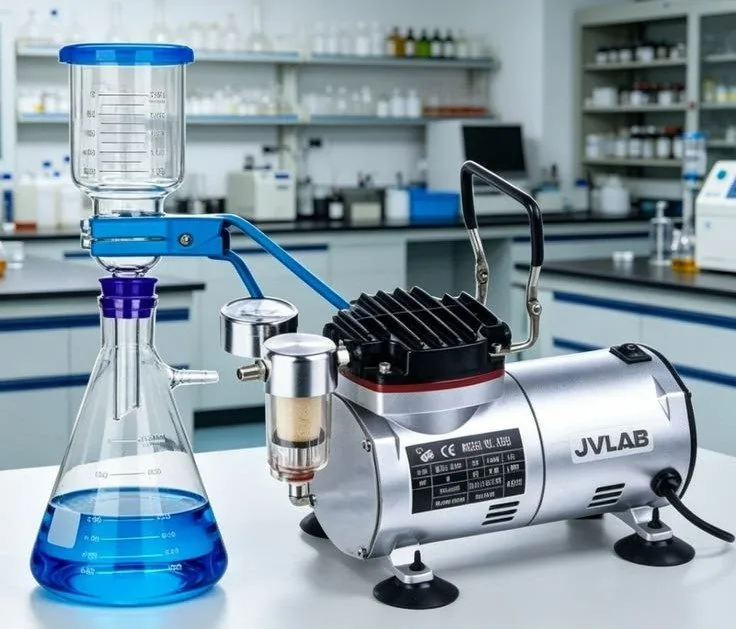

To empower scientific discovery, healthcare advancement, and quality research.
We aim to make reliable laboratory and medical products easier to access for institutions that depend on them.
Aco Liff Medical Supplies Ltd was established to help institutions source medical and laboratory products with less delay and less friction. The company serves buyers who need reliable supply, clear communication, and practical support.

The company profile is centered on making procurement easier for hospitals, chemists, universities, research institutions, and industrial laboratories.
We keep requests simple and responses direct.
We match products to the actual use case.
We stay engaged from quotation to supply.
The mission, vision, and values below reflect the company profile shared by the client.
We aim to make reliable laboratory and medical products easier to access for institutions that depend on them.
We supply medical and laboratory products that support consistency, accuracy, and everyday operational needs.
Our responsibility goes beyond product supply. We aim to support dependable access to essential medical and laboratory items, strengthen learning, and encourage safer, more responsible handling of consumables across the institutions we serve.
We help hospitals, clinics, chemists, and laboratories source products that support continuity of care and day-to-day technical work, with clear communication and practical supply support.
We serve schools, universities, and research institutions that depend on reliable materials for teaching, skills development, and hands-on scientific work.
We encourage careful specification, proper handling, and informed disposal awareness so consumables and laboratory materials are used with less waste and better safety.
The service path is structured for clarity, from first inquiry to final supply.
We review the product list, quantities, and timeline.
We identify the right product family and technical fit.
We send a clear response that is ready for internal review.
We follow through on the order until it is complete.
The business was established to support institutions that need dependable scientific supply.
We serve healthcare, food processing, industrial, environmental, and learning institutions.
We continue refining the catalog to serve technical buyers more effectively.